| 日付 | 2026年9月20日（日） - 2026年9月23日（水） | ||||||
|---|---|---|---|---|---|---|---|
| 山域 | 東北の山 | ||||||
| メンバー | 家族（妻） | ||||||
| 山行形態 | 前夜泊3泊4日車中泊 | ||||||
| アクセス | 車 | ||||||
| ルート (Map2) |
|
3日目
道の駅津軽白神で車中泊。
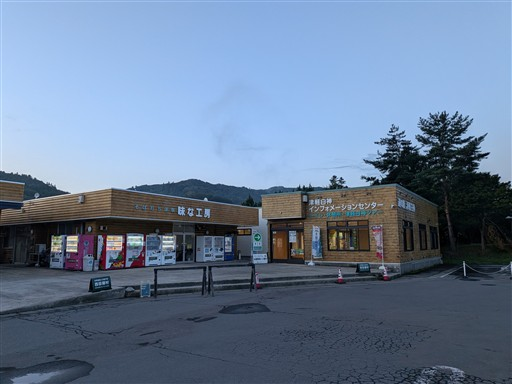
本日は岩木山登山の予定。駐車場に移動する。標高170m。
秀麗な岩木山の姿が駐車場から見える。
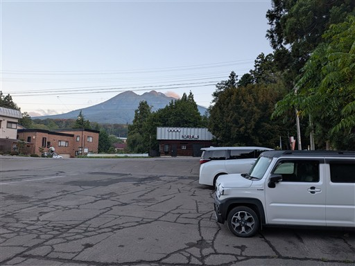
ちょうど日の出の時刻。
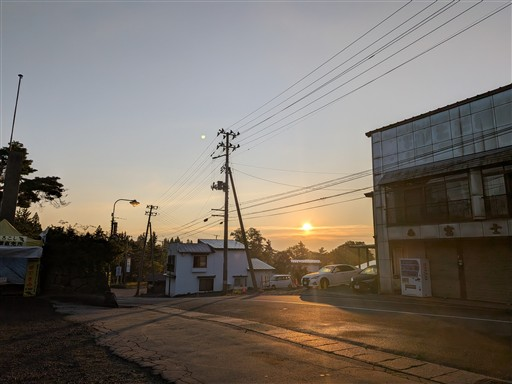
岩木山神社。お参りしてから登山を開始する。
ちょうど鳥居の奥に山頂が見えるようになっている。
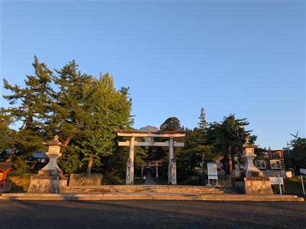
参道を歩いていく。まだ朝早いので人は少ない。
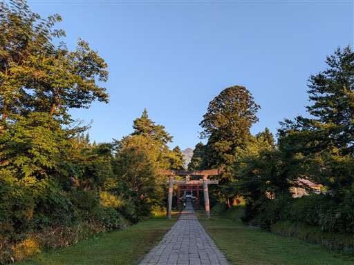
神社は残念ながら工事中で門の前までしか行けない。
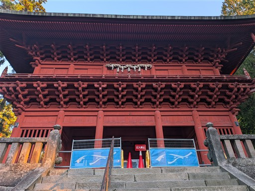
参道を振り返る。朝日を浴びた朝靄が美しい。
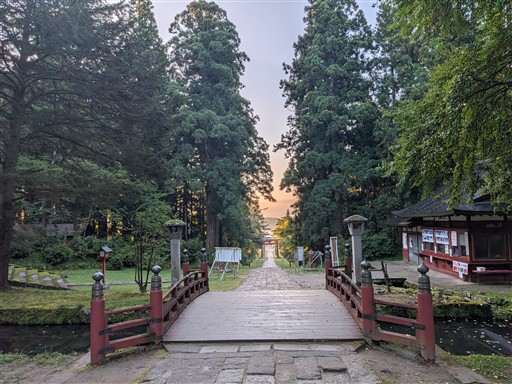
本来であれば神社の奥から登山ができるのだが、工事中のため迂回路が用意されている。
9/14からとのことで、工事開始はシルバーウィークを待ってほしかったところだ。
なんと2030年まで続く工事のようだ。
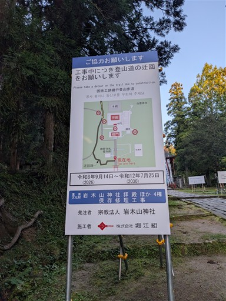
できたばかりの道。標識は完備されている。
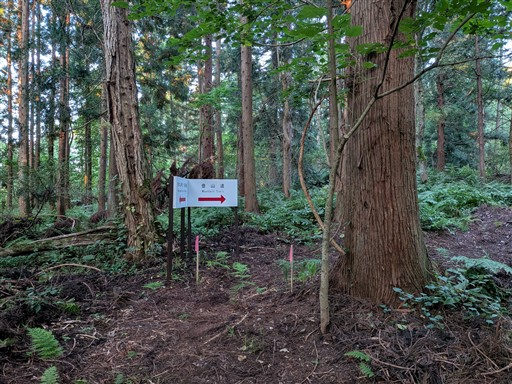
岩木山神社の裏に回ってくる。
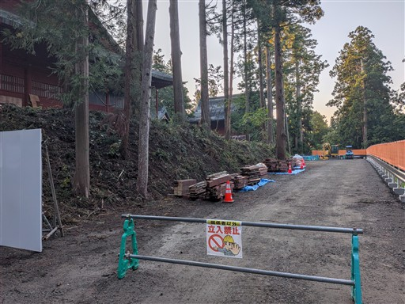
ここから登山開始。
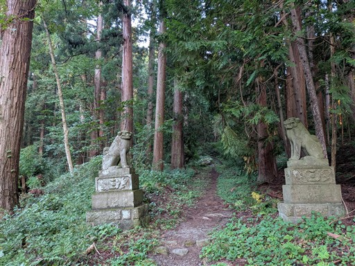
杉並木の道を歩く。
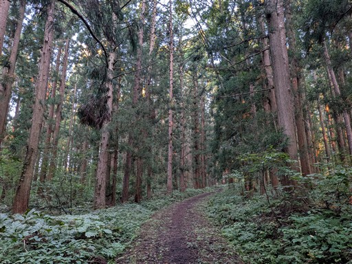
桜林公園で再び車道に出てくる。
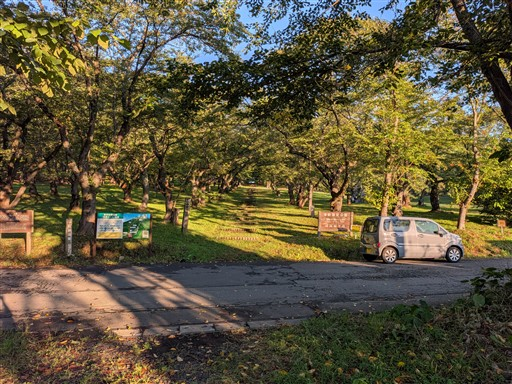
春には満開の桜と残雪の岩木山の眺めが楽しめそうだ。
キャンプ場を兼ねているのか、テントを張っている人がいる。
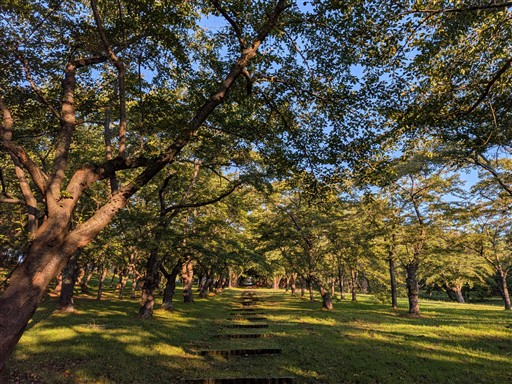
建物の中を潜って登山道に入って行く。
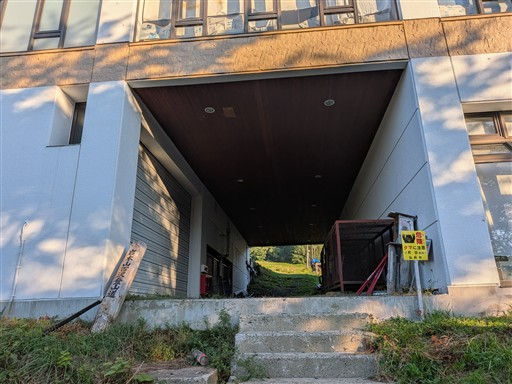
最初はスキー場の中を登る。本日は快晴だ。
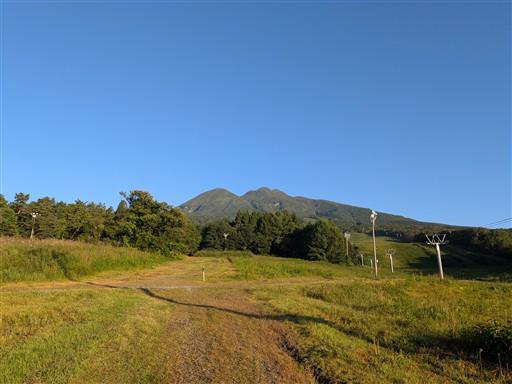
スキー場を抜けると樹林帯の中の道になる。
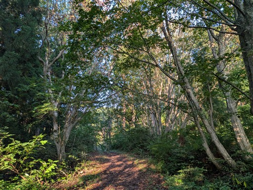
これは一体何？
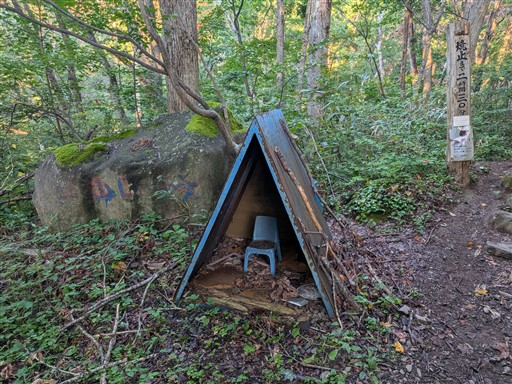
ようやく本格的な登山道が始まる。
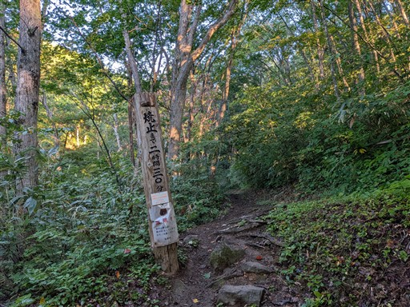
切り株の上に小さなキノコが1つ生えている。
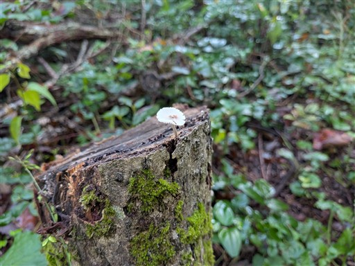
標識が木に飲み込まれている。かなり古そうな標識だ。
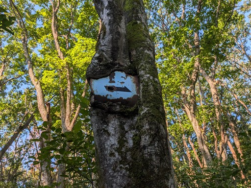
カラスの休場に到着。少し広い場所という以外に特徴はない。
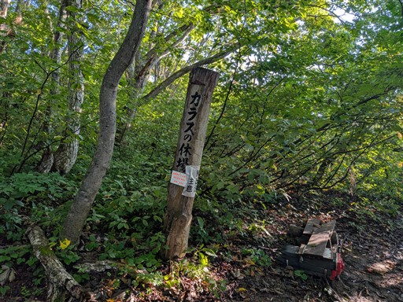
樹林帯の中の道が続く。
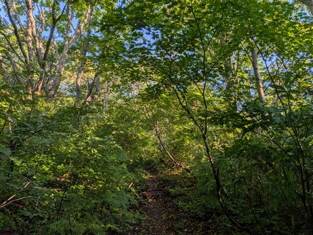
鼻コクリ。ここから鼻が付くほどの急斜面になるとのこと。
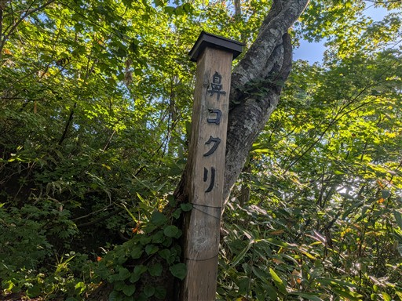
それほどでもない。
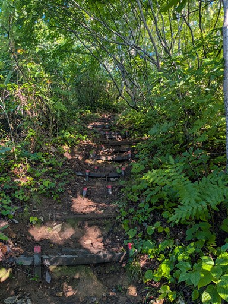
姥石。何の変哲もない石だが、他に変化を感じる要素のない道なので、
こういったポイントがあるだけでも助かる。
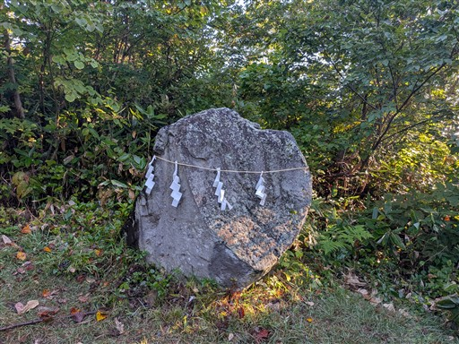
焼止りヒュッテに到着。頑丈そうな避難小屋だ。
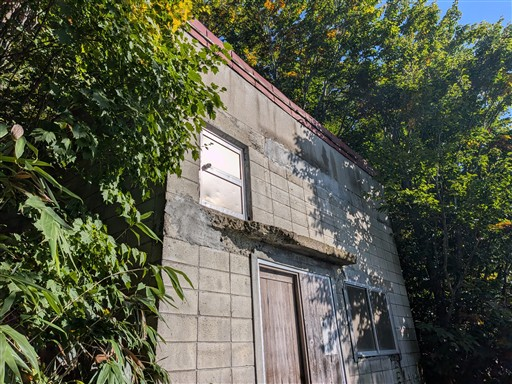
ここからは少しだけ下界の展望が広がる。
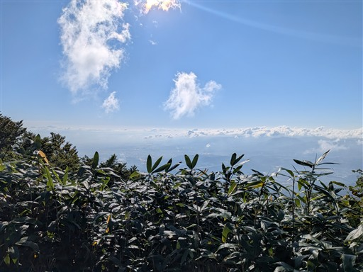
ここから登山道の様相が一変する。溶岩が流れた跡を登っていく。
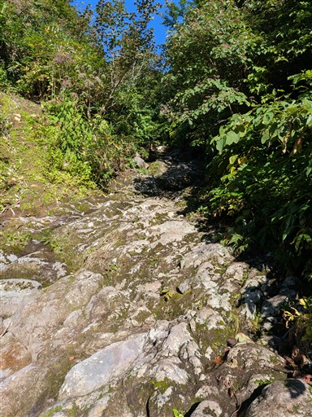
木が低くなり、頭上の視界が広がってくる。見事な青空だ。
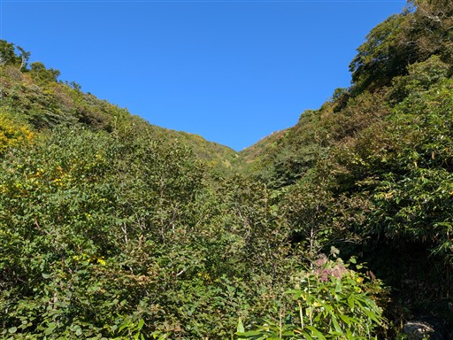
歩いていてとても楽しい登山道。
序盤から一転して岩だらけの道だ。
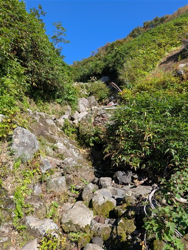
谷筋を登っていく。下界はだいぶ雲が出てきた。
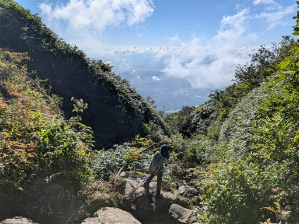
シシウドの大柄な花が咲いている。
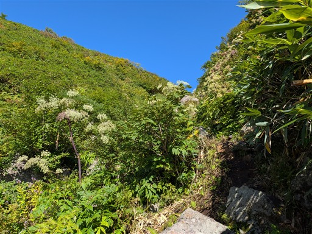
沢沿いのコース。すぐ側には水が流れている。
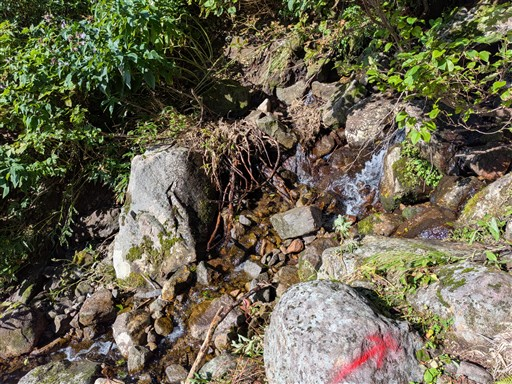
アザミ系の花。大群落をつくっている。
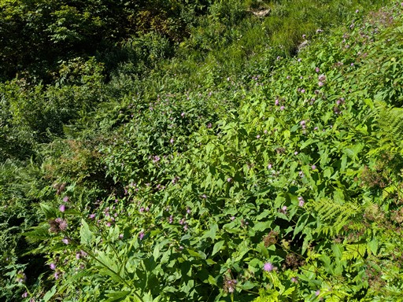
山頂部が見えてくる。
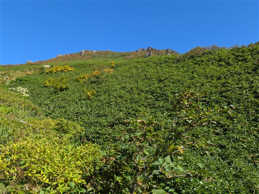
錫杖清水に到着。ものすごい勢いで水が出続けている。
非常に冷たい水だが、真上が人の集中する山頂なのがちょっと気になる。
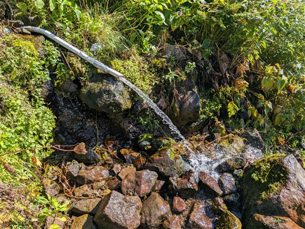
最後は沢の源頭のような風景になる。
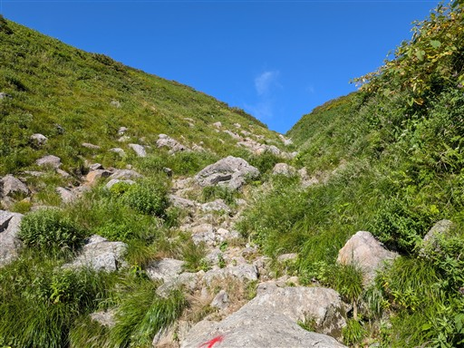
種蒔苗代に到着。小さな池だ。
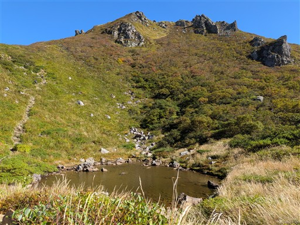
凰鳴ヒュッテに到着。ここで8合目駐車所、リフトからの道と合流する。
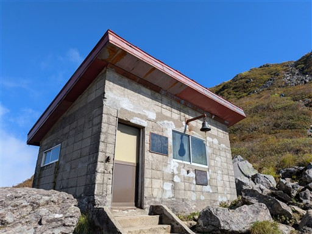
ここから最後の登り。大混雑になるかと思ったが意外に登山者の数は増えない。
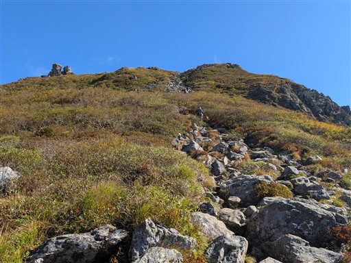
混雑時のために右登り左下りと道が分けられている。
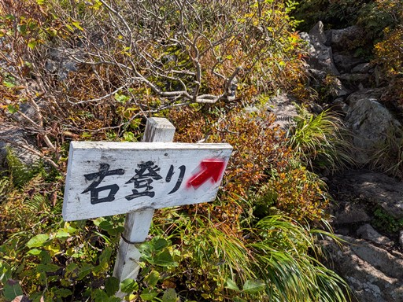
岩ゴロゴロの登山道。傾斜は結構急だ。
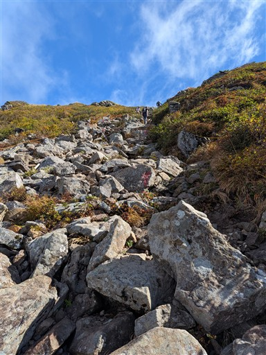
山頂が見えてきた。
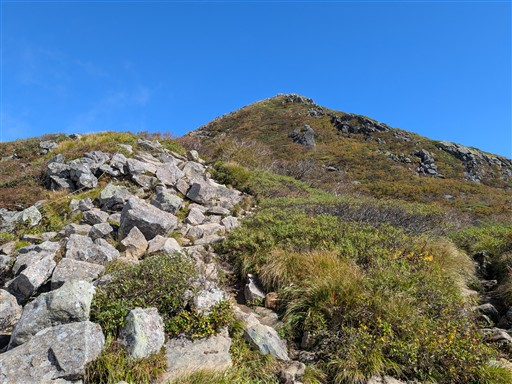
ここを登り切れば山頂だ。
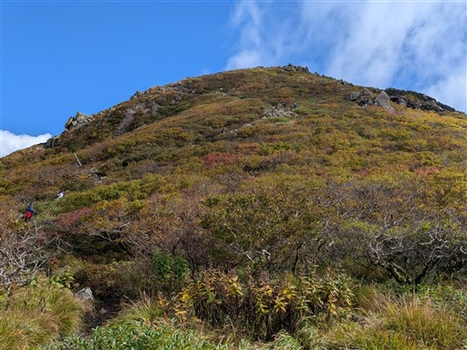
眼下にはリフトの山頂駅と8合目駐車場が見える。
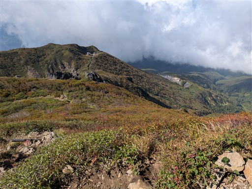
広い斜面では紅葉が始まっている。
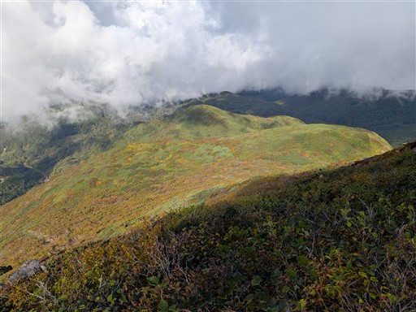
岩木山山頂に到着。標高1624m。
四面に山頂標識があり、効率よく写真撮影できるようになっている。
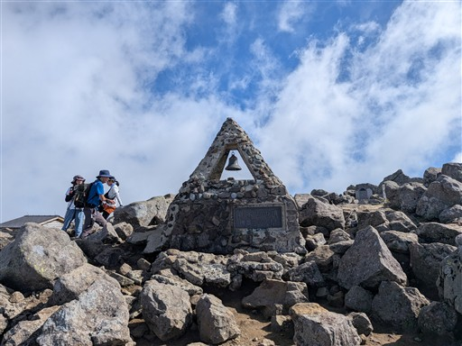
岩だらけの山頂。そこそこの広さだ。
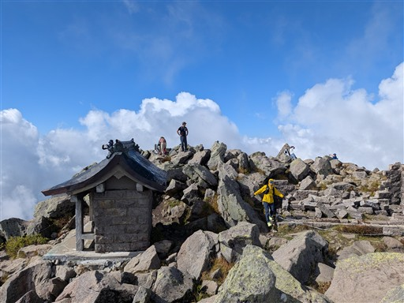
岩木山神社奥宮。山頂に鎮座している。
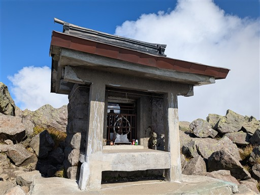
あれほど快晴だったのに雲に覆われて遠くの展望はあまり広がらない。
雲の切れ目から僅かに下界が見渡せる。
昼食をとったら下山開始。周囲は雲に包まれてしまった。
下から続々と登山者が登ってくる。
岩木山のリフトは9時から運航開始で、第一陣の登山者がちょうど山頂に着く時間なのだろう。
ギリギリ大混雑を避けられた。
噴火口。尖った山なので噴火口があるとは思わなかった。
ここから一人、ひとっ走り鳥海山を往復することにする。
この天気では行く意味はないかもしれないが、ダメもとだ。
斜面の紅葉が美しい。
鳥海山に到着。岩木山の山頂部がちょっとだけ見える。
もっと大展望が広がると思ったが、意外にそうでも無い。
雲が多いので下界の展望もちょっとだけ。
引き返す途中で雲がとれて、ここで岩木山の迫力ある姿が眺められる。
こういう景色を期待していたので、雲が取れてラッキーだった。
眼下にリフト乗り場が見える。往復1500円で、稼ぐ標高の割に値段は高めだ。
噴火口まで戻ったら下山開始。
リフトを使わず登ってくる登山者も多く、すれ違いで結構待たされる。
8合目駐車場まで下りてくる。かなりの賑わいだ。
駐車場から見上げる岩木山。
ここから山頂が少しでも見えると、これから向かう人はテンションが上がるだろう。
駐車場から下山道に入って行く。ここからはほとんど人のいない道だ。
上部は紅葉が始まっていて美しい。
紅葉の中を下っていく。
その後は変化のあまりない登山道。
バスの時間を気にしながら淡々と下っていく。
途中で周囲は美しいブナ林になる。白神山地のような原生林ではなく二次林だろう。
巨木の森分岐に到着。あまり整備された道はなさそうで、ここはスルーする。
ブナ林も背後が青空だとより美しい。
最後はとても滑りやすい道。
極力落ち葉の上を歩いたが、それでも滑ってこけそうになった。
嶽コース登山口にある稲荷神社。真赤な鳥居が美しい。
大きな杉が二本、登山道の両脇に立っている。
無事下山。標高450m。
こちらの方が岩木山神社より少し標高が高い。
この登山口の駐車場も大混雑。嶽コースの往復登山者だろうか？
そこまで人とすれ違った記憶はないが…
嶽温泉前バス停に到着。バス発車のちょっと前に下りてこられた。
ここからは8合目駐車場まで行くバスも出ている。
少し時間が余ったので、売店でトウモロコシを買う。
甘くてとてもおいしいトウモロコシだった。この辺りの名産品のようだ。
バスで岩木山神社に戻ってくる。
岩木山は結構登りごたえのある山だった。百沢コースは変化に富んでいて
登っていて楽しい道だったし、大混雑をうまく避けられたしで、良い山行だった。
山頂に着いた直後に雲に覆われてしまったのがちょっと残念だった。
下山後、車をところどころで停めて景色を眺める。
岩木山とはこれでお別れ。山頂部はずっと雲に覆われたままだ。
南の方角。見えているのは白神山地だろうか？
リンゴ畑。青森ではとにかくよく見かけた。あちらこちらリンゴ畑だらけ。
リンゴと言えば青森だが、本当にそれを実感することができた。
本日はせせらぎ温泉で汗を流す。
地元民の津軽弁はほとんど何話しているか分からなかった。
わらび餅ドリンク。ストローを通してわらび餅が食べられる。
和風タピオカドリンクという位置づけ。
温泉を後にしたら一路岩手へ。岩手山SAの背後に聳えるのはもちろん岩手山。
こっちの山も良い。
夕飯は牛匠おがたで。黒毛和牛を食べられるお店。
少し混雑していたので待っている間にコインランドリーへ。
食後は道の駅みずさわで車中泊。